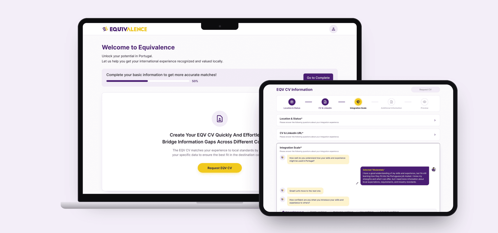
Best Client Relationship Mentor’s Award · UXathon 2025
Reducing Onboarding Drop-off for Migrants
Equivalence is a platform that helps highly qualified migrants build their careers in a new country. It recognises their education, experience and skills, and translates them into the context of the Portuguese labour market.
During a one-week UXathon, I led a team of four to redesign the EQV CV request flow. I drove the research and user journey analysis, then restructured the information architecture and user flow to reduce friction and confusion, and to increase form completion and profile requests.
Context
What's EQV CV?
Many highly qualified migrants end up in jobs below their skill level because their foreign qualifications aren’t properly understood. Equivalence calls this “brain waste”, like a doctor working in a supermarket.
To tackle this, Equivalence created EQV CV: a CV adapted to the Portuguese labour market using local references and context.
Requesting an EQV CV takes four steps:
Problem
Only 1 in 4 pilot users reached “Request EQV CV”
In the current EQV CV request journey, users struggled to complete the steps leading up to the “Request EQV CV” action.
their EQV CV(240 / 320)
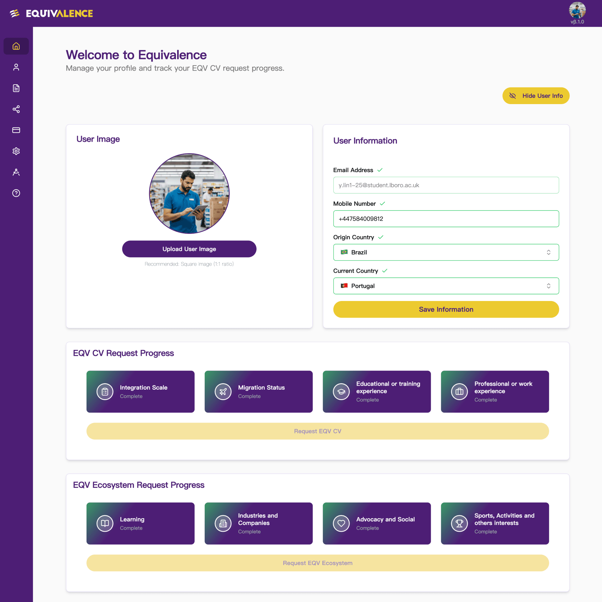
Original home page: A lack of clarity about what users were doing and why
The progress cards look clickable but aren’t, and there’s no clear next step.
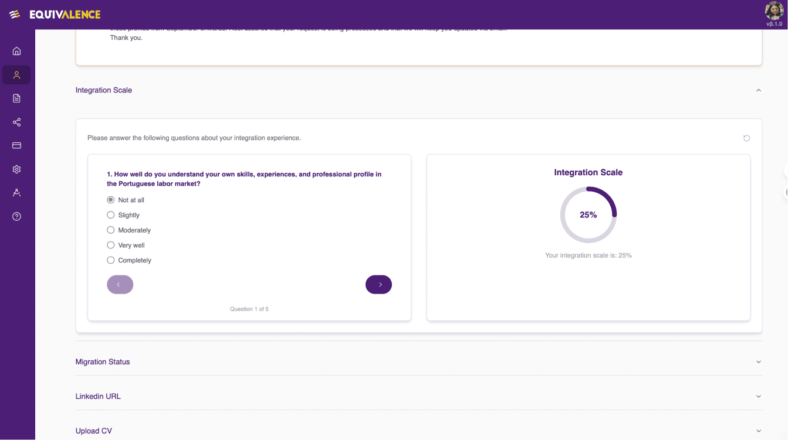
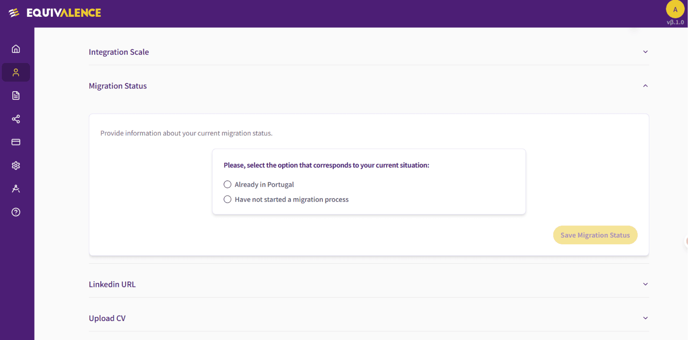
Profile page: A fragmented flow with no clear progression or support
The form is split into separate dropdowns, so it feels like many different tasks.
Discovery
Where users got stuck
To understand where users got stuck, we worked with Equivalence to gather feedback from pilot users who had received their EQV CV.
It is a very useful tool but difficult to use
It contains specific information about Portugal that needs to be contextualized or explained beforehand
Once you understand it, it is very beneficial
Too much text
We also walked through the EQV CV request process ourselves and mapped the current journey.
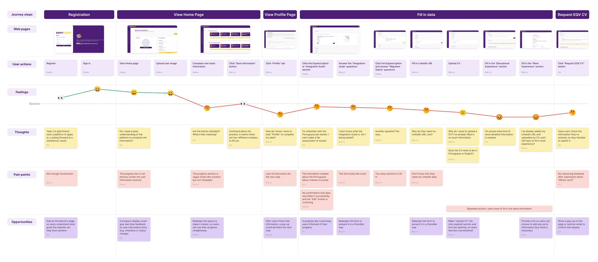
From the journey map, we identified three key pain points:
Mood dropped right after “Save information”. Nothing told users to click “Profile” to continue.
The form felt like a test, and it wasn’t clear what the Integration Scale was for.
Users had to enter the same information several times: LinkedIn, CV, then education and work experience.
Users found the EQV CV useful,
but hard to get to and hard to read.
Design goals
How might we create a clearer, more guided flow that helps users confidently complete key fields and follow through to request their EQV CV without dropping off?
Based on our research and the client’s requirements, we set three goals for a smoother, more intuitive experience that helps users:
Final Design
EQV CV Request Flow
With only one week, we worked closely with the client and focused on the EQV CV request process, where small changes could deliver quick wins.
Key design decisions
01 Understand each step
The original site didn’t show the steps, so users couldn’t tell where they were or what came next. We added a stepper that stays fixed at the top, so users always know which step they’re on and how many are left.
Before
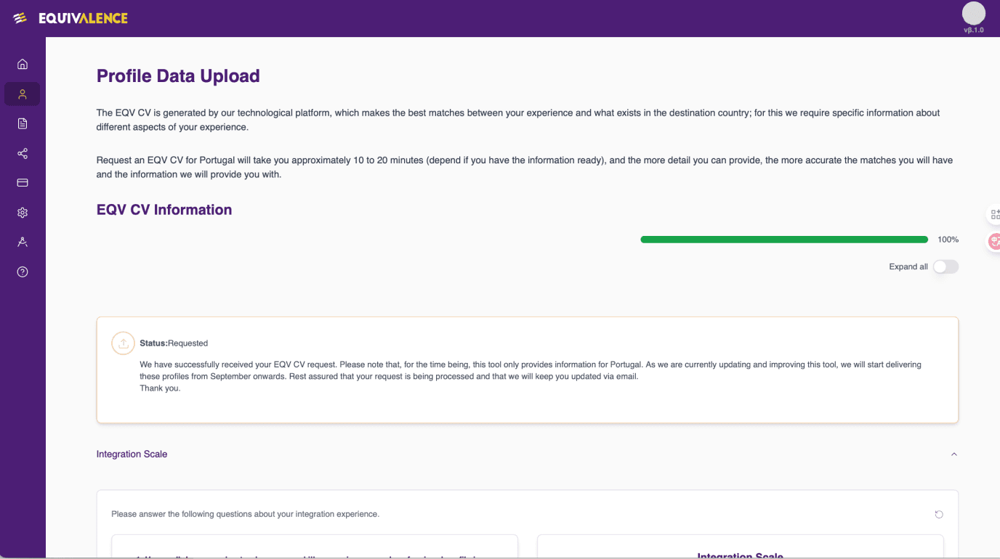
After
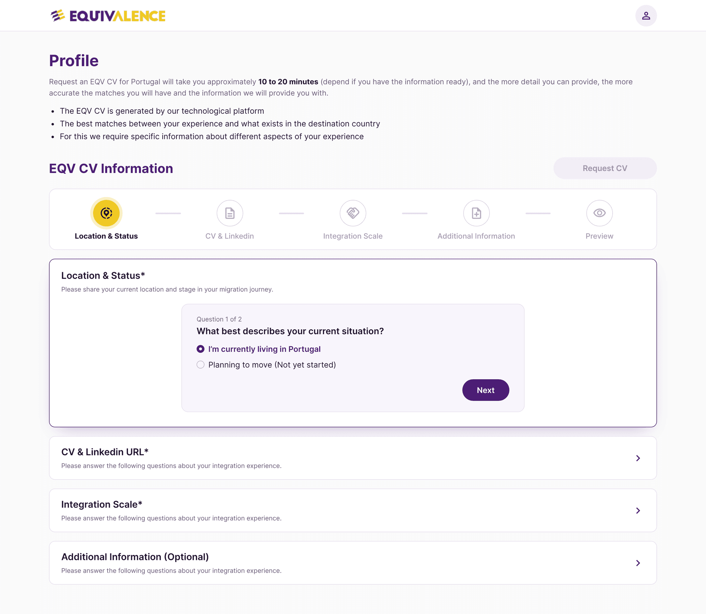
02 Complete all required data
The client needed four pieces of data to measure impact: user information, migration status, the Integration Scale and a PDF CV. We made these required and moved them to the front of the flow. Education and work experience became optional, so users can finish the essentials first without feeling overwhelmed.
Before
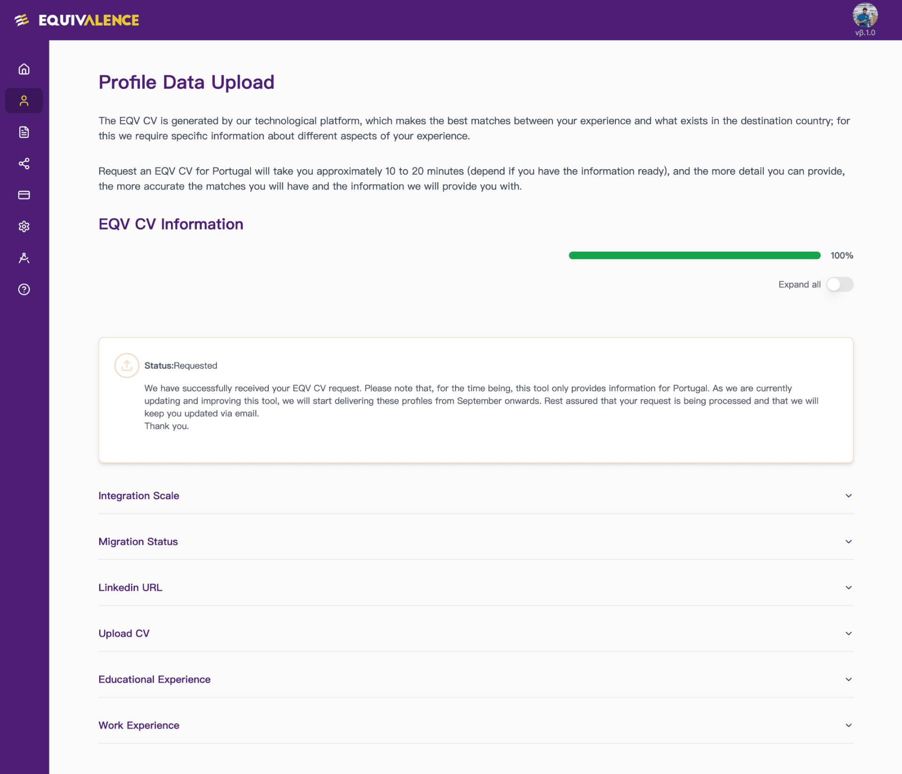
After
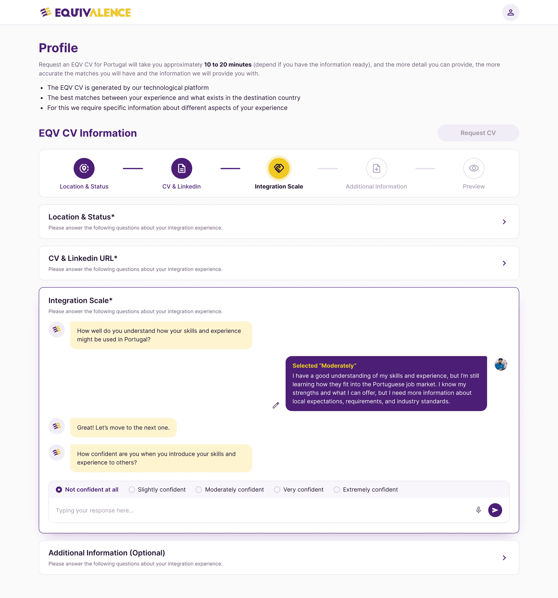
03 Request EQV CV easily
The original “Request EQV CV” button sat at the bottom of a long form, so users often missed it. We added a Review page where users can check their answers before requesting, and made the button the main action on that page.
Before
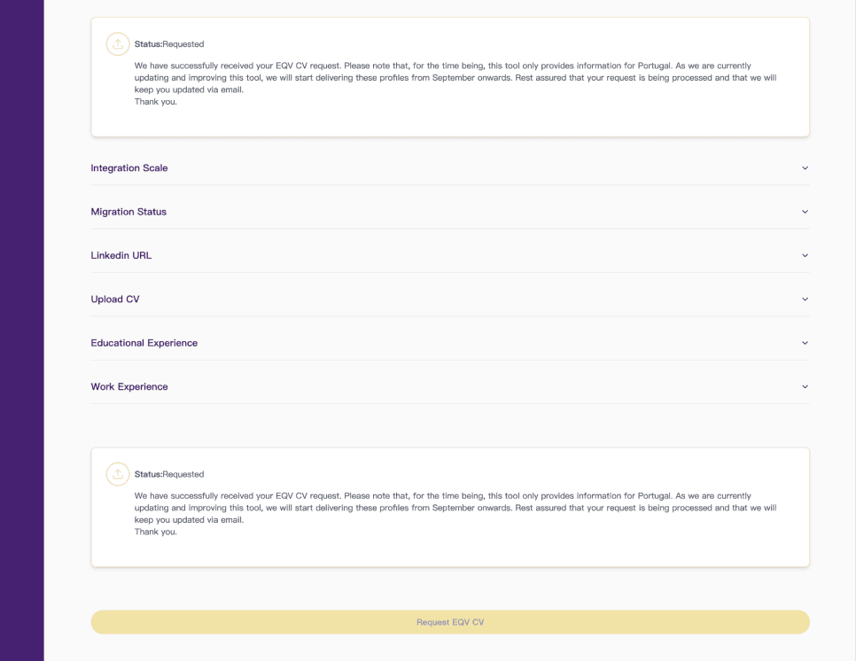
After
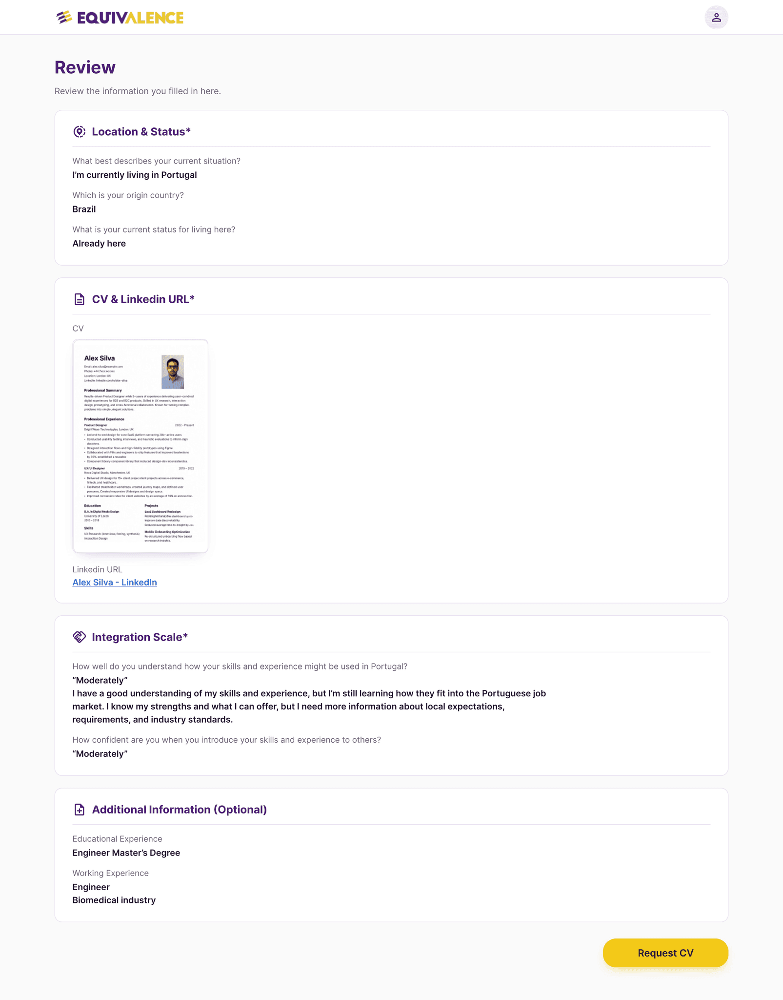
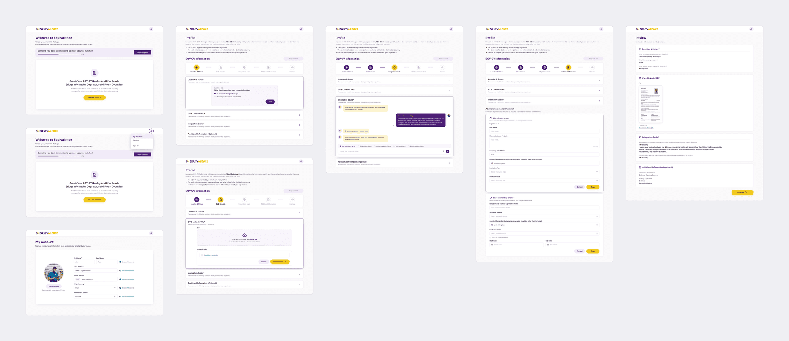
Outcome Evaluation
What success will look like
The redesign hasn’t launched yet, so these are the metrics we’d track to measure its impact.
| Fewer drop-offs | Fewer users leave before reading the Review page |
| More requests | More users who upload their CV go on to click "Request EQV CV" |
| Complete data | More users complete their personal details, migration status, Integration Scale and CV |
| Clear steps | Users understand each step faster |
Reflection
In this one-week sprint, I learned…
It was also a great experience working with a client from another country!
With only one week, I learned to spot each teammate’s strengths early and assign tasks around them, so everyone could focus on what they did best.
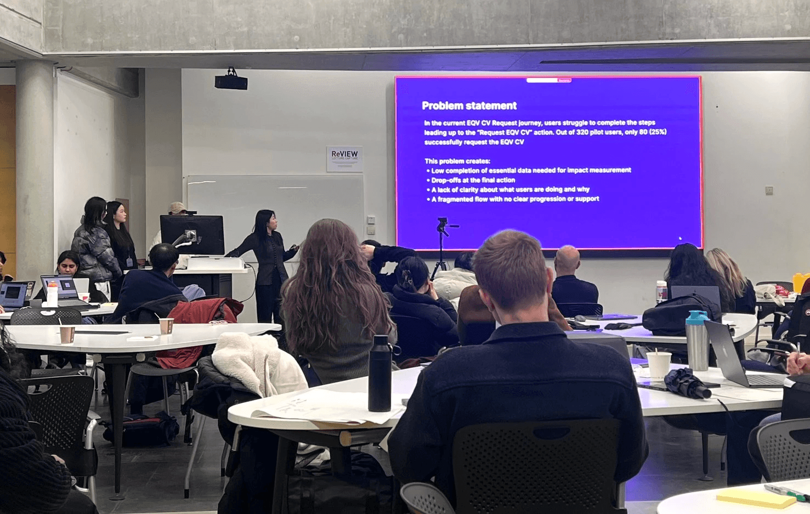